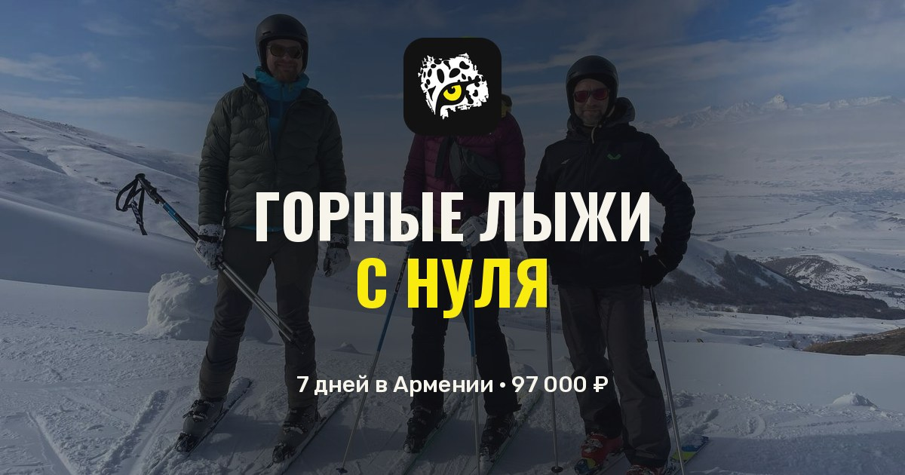
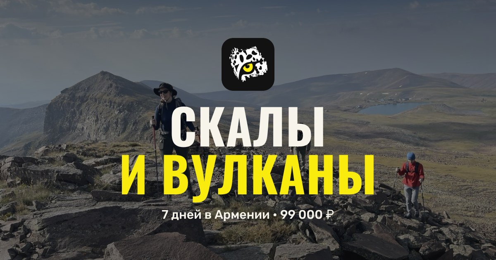
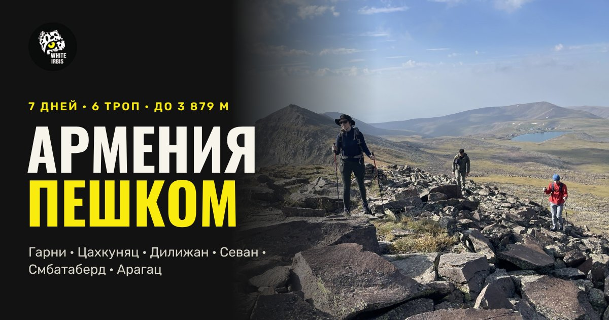
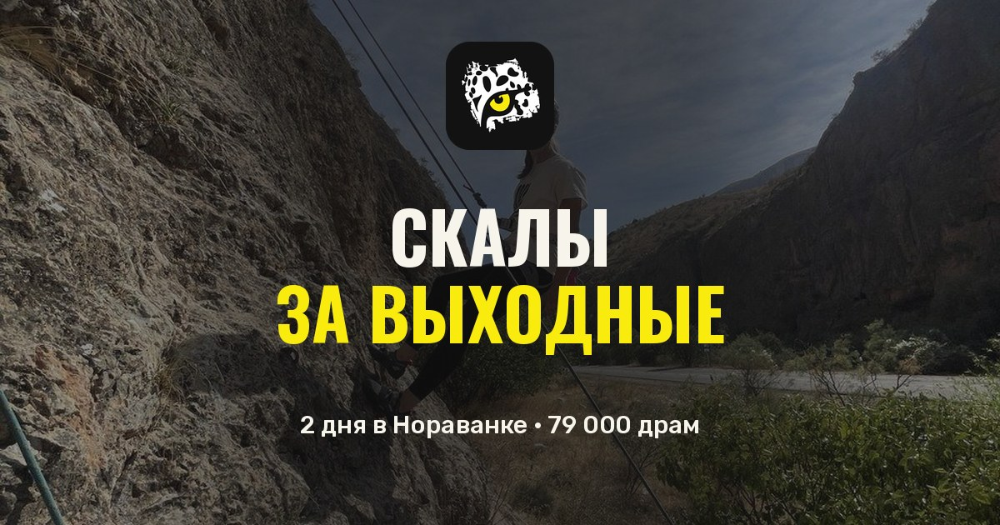
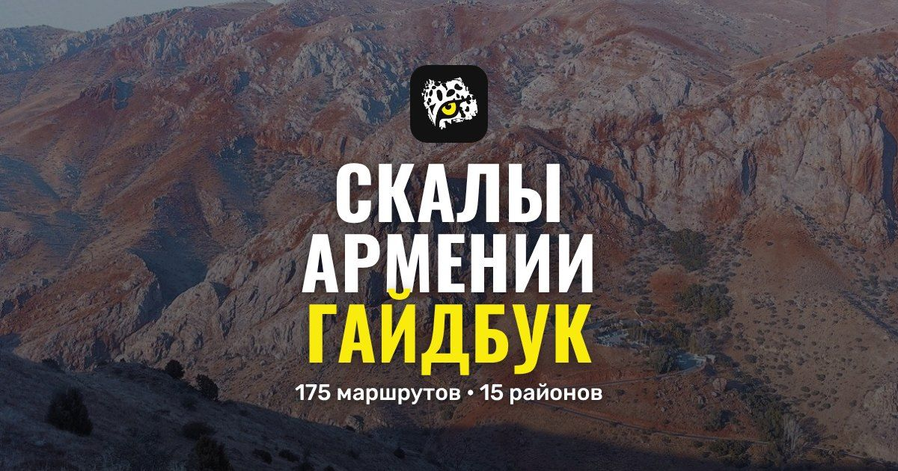

White Irbis — Follow the White Irbis
Follow the
White
Irbis

Горные лыжи с нуля · 7 дней · зима

Скалы и вулканы · 7 дней · апрель — ноябрь

Армения пешком · 7 дней · 6 троп · май — октябрь

Скалы за выходные · 2 дня из Еревана

Гайдбук «Скалы Армении» · 187 маршрутов